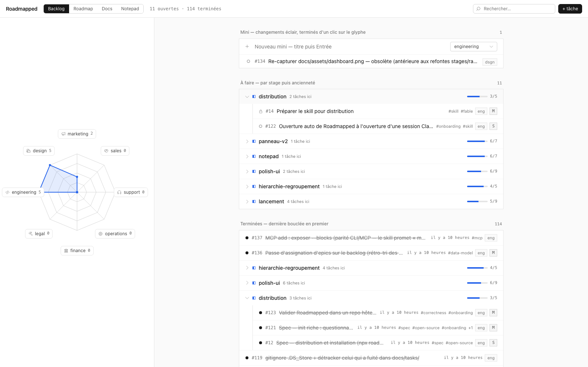

Your repo is already your project management tool. We just added the interface.
Backlog, roadmap and docs as plain YAML and markdown inside your repository — the only source of truth. No database, no SaaS, no account. Your AI agent reads and writes it in the right format; you review the diff.
There's no step 2. We checked.

What's in the folder
Backlog that lives in git
Sections and tasks under docs/tasks/. Full CRUD from the dashboard or the CLI. Every task is a YAML file you can diff, review, and blame — because it is one.
Roadmap with no dates to lie about
Your sections become milestones. done / available / locked states are computed from the dependency graph on every read, never stored. Nothing to drift out of sync, because there's no second copy.
Agent-first, by design
A CLI and a Claude skill so your agent creates specs, tasks and dependencies in the correct schema — and records what it ships with more discipline than most of us manage.
Validated writes, honest history
Every write — dashboard or CLI — goes through the same validator. On error, the change rolls back. Ids are never reused. Your git history is the audit log.
How it works (it's files)
Everything is flat, hand-editable files: task YAML you can read without us, docs rendered straight from your docs/ folder. The dashboard and the CLI read and write the same data through the same validator — never a second, parallel schema hiding somewhere.
Yes, it's a folder of YAML files. No, it's not a database. That's kind of the point.
Built by using itself
Roadmapped's own backlog is managed by Roadmapped, mostly by a Claude agent that records every task it ships. The done backlog is the changelog. The commit history is the proof. If you want to know whether the workflow holds up, don't take our word for it — read the backlog.
Quickstart
npx roadmapped init # scaffold docs/tasks/
npx roadmapped dashboard # open the dashboard
npx roadmapped --help # the CLI your agent drivesPoint your AI agent at the Claude skill and it takes it from there.
Where your data lives
On your machine, in your repo. Not out of principle — we simply don't have a server to send it to. Deleting your account is rm -rf. GDPR compliant by design; the design being that we never had your data.
Free, and actually free
MIT licensed. No pricing page, no seats, no "contact sales." We don't have a customer success team to schedule an onboarding call — we don't have customers. It's free.